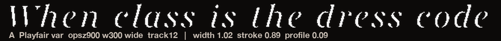
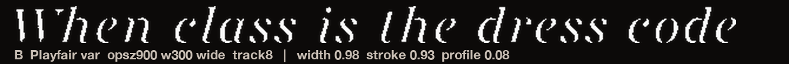
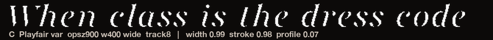
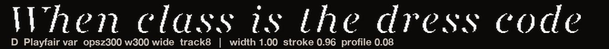
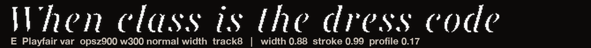
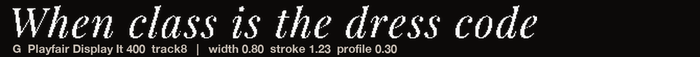
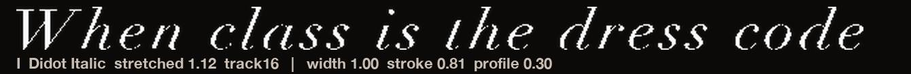

Every candidate at the exact height of the posted original (so width and weight differences are real). The original is repeated above every candidate. Labels and metrics are baked into each image: width and stroke of 1.00 mean identical to posted. All strips are pure letterforms, no background, so nothing hides.
The previous page had frame images mislabelled (the "Playfair" frame was actually the stretched Didot) — that is what looked too wide and squat. These strips carry their own labels so that cannot happen again.







My reads: class line = C (Playfair var, opsz 900, weight 400, wide — width 0.99, stroke 0.98). What’s On = 500 by stroke measurement (0.99 vs your slide); 700 measures 15% heavier than the posted headline, but both are on screen above — your call. Say a letter or a weight and I rebuild with it.